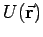

Inhalt Index DeskTop Bronstein

 Vektoranalysis und Feldtheorie Räumliche Differentialoperationen Nablaoperator, Laplace-Operator Laplace-Operator
Vektoranalysis und Feldtheorie Räumliche Differentialoperationen Nablaoperator, Laplace-Operator Laplace-Operator


In den folgenden Formeln erfolgt die Anwendung des LAPLACE-Operators auf die skalare Ortsfunktion . Das Ergebnis der Anwendung ist dann ein Skalar. Bei Anwendungen auf vektorielle Ortsfunktionen  ist das Ergebnis der Anwendung ein Vektor mit den Komponenten .
ist das Ergebnis der Anwendung ein Vektor mit den Komponenten .
| (13.73) |
| (13.74) |
 |
(13.75) |
| (13.76a) |
mit
 |
(13.76b) |
| (13.76c) |